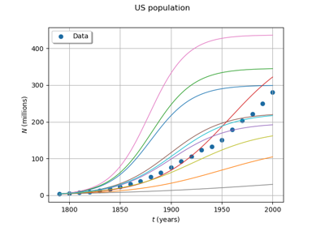

OpenTURNSPythonPointToFieldFunction¶
- class OpenTURNSPythonPointToFieldFunction(inputDim, outputMesh, outputDim)¶
Override PointToFieldFunction from Python.
- Parameters:
- inputDimpositive int
Dimension of the input vector d
- outputMesh
Mesh The output mesh
- outputDimpositive int
Dimension of the output field values d’
Notes
Examples
>>> import openturns as ot >>> class FUNC(ot.OpenTURNSPythonPointToFieldFunction): ... def __init__(self): ... mesh = ot.RegularGrid(0.0, 0.1, 11) ... super(FUNC, self).__init__(2, mesh, 2) ... self.setInputDescription(['R', 'S']) ... self.setOutputDescription(['T', 'U']) ... def _exec(self, X): ... size = self.getOutputMesh().getVerticesNumber() ... Y = [ot.Point(X)*i for i in range(size)] ... return Y >>> F = FUNC()
Methods
__call__(X)Call self as a function.
getInputDescription
getInputDimension
getOutputDescription
getOutputDimension
getOutputMesh
setInputDescription
setOutputDescription
- __init__(inputDim, outputMesh, outputDim)¶
Examples using the class¶

Logistic growth model